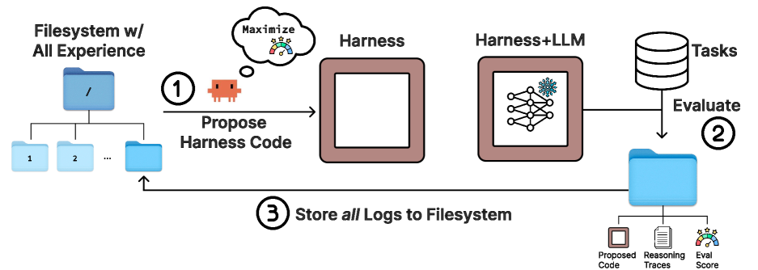
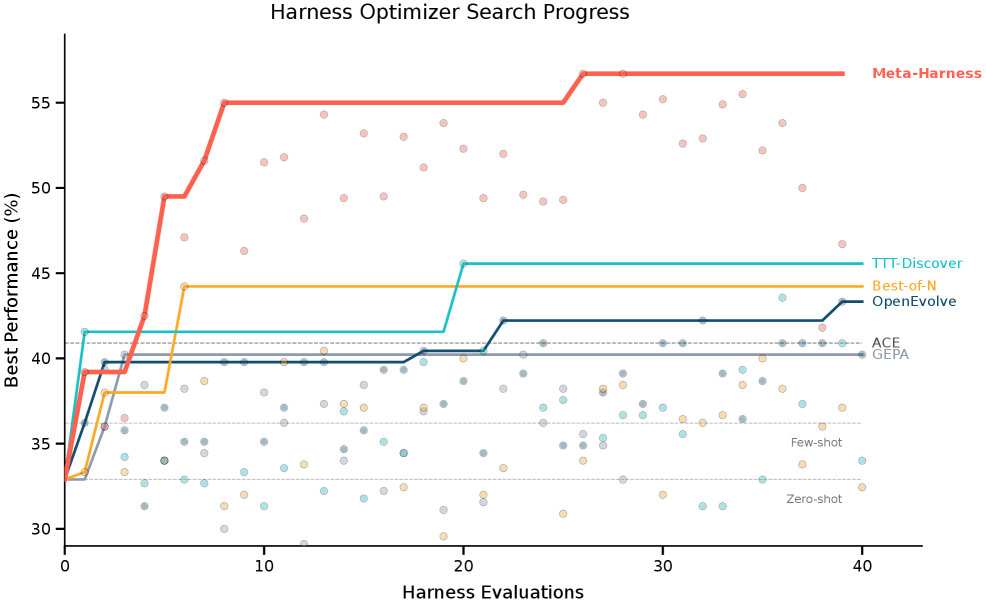
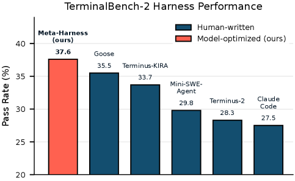

End-to-end optimization of model harnesses
A short paper briefing on the core idea, the system architecture, and what the method actually improved.

Better harnesses can be found by a coding agent that reads full prior code, scores, and traces through a filesystem.
What is inside
Short version first, then the method, then the strongest evidence.
TL;DR
The strongest idea is not search over prompts. It is search over executable harness code with selective access to full prior experience.
Why this paper exists
Architecture
In the hardest setting, the proposer reads a median of 82 files per iteration. The search is using history broadly, not just mutating the latest version.
Best result

Transfer
One discovered retrieval harness improves performance on 200 unseen IMO-level problems across five held-out models.
Beats Terminus-KIRA at 74.7% and ranks second overall among Opus 4.6 agents in the reported table.
Ranks first among Haiku 4.5 agents in the paper's comparison table.

Limits and takeaway
The paper makes a strong case that future gains may come from agents redesigning their own scaffolding, with full prior experience available as searchable external memory.